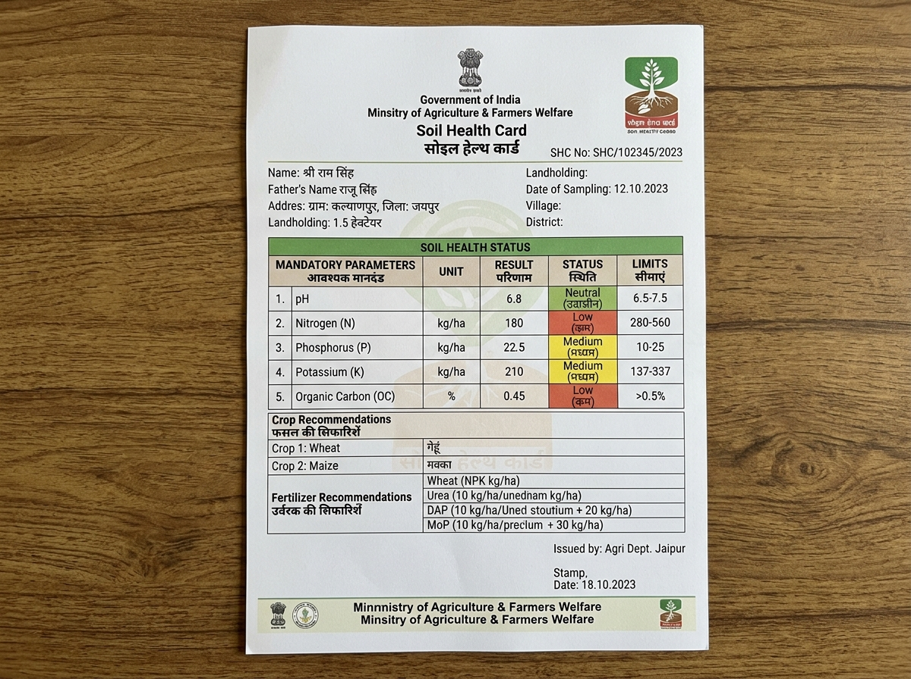
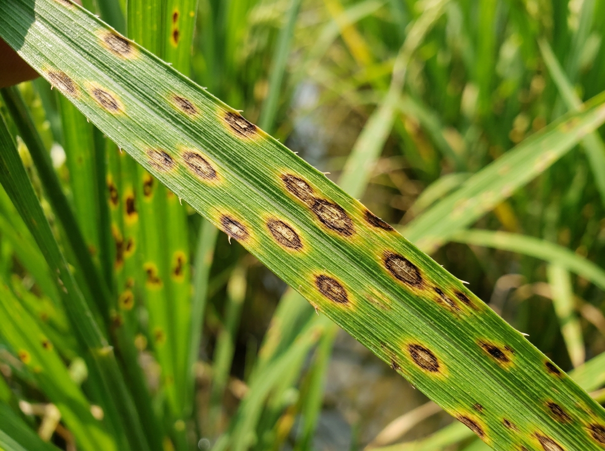

Vernacular Advisory Speech Synthesis
Listen to real-time Tamil & English soil nutrition & weather advice
Upload physical Soil Health Card or run sample card to extract NPK metrics via Gemini Vision OCR.

Sample Indian Soil Health Card (Jaipur/Tamil Nadu SAU format) Loaded
Recommended Split Application Matrix (Per Acre)
| Growth Stage | Urea | DAP | MOP | Bio / Organic |
|---|---|---|---|---|
| Basal Stage | 30 kg | 55 kg | 20 kg | Neem Cake 100 kg |
| Active Tillering | 45 kg | 0 kg | 15 kg | Azospirillum 2 kg |
| Panicle Initiation | 30 kg | 0 kg | 15 kg | Panchagavya Spray |
Real-time Google Earth Engine Vegetation & Water Index for Plot ID: TN-CBE-2026-0891
Vertex AI + MobileNetV3 Leaf Disease Scanner

Paddy Leaf Sample (Brown Spot / Helminthosporium)
Rice Brown Spot Disease (Helminthosporium oryzae)
Detected multiple dark brown oval lesions with yellow halos on leaf surface. Common in nitrogen-deficient soils.
🌱 Organic / Regenerative Remedy
- Foliar spray of Pseudomonas fluorescens @ 10g/litre of water.
- Apply Neem oil formulation (3%) during morning hours.
- Incorporate compost to improve soil organic carbon above 0.6%.
🧪 Targeted Chemical Treatment
- Spray Mancozeb 75% WP @ 2g/litre or Tebuconazole 25.9% EC @ 1ml/litre.
- Maintain 14-day pre-harvest safety interval.
Standardized OpenAPI 3.0 / JSON-LD schemas enabling State Agricultural Universities (SAUs) and State Departments to query federated agro-advisories.
{
"@context": "https://agrix-go.org/schemas/v1/context.jsonld",
"protocol": "Beckn-AgriX-1.0",
"action": "on_search_advisory",
"message": {
"plot_id": "TN-CBE-2026-0891",
"location": { "lat": 11.0168, "lon": 76.9558 },
"soil_chemistry": {
"ph": 6.8,
"nitrogen_kg_ha": 180.0,
"phosphorus_kg_ha": 22.5,
"potassium_kg_ha": 210.0,
"organic_carbon_pct": 0.45
},
"sentinel_remote_sensing": {
"ndvi_score": 0.74,
"ndwi_score": 0.42,
"nitrogen_stress": true
},
"advisory_output": {
"crop_target": "Paddy_ADT53",
"disease_detected": "Rice_Brown_Spot",
"confidence": 0.984,
"recommended_treatments": {
"organic": "Pseudomonas fluorescens 10g/L",
"chemical": "Mancozeb 75% WP 2g/L"
}
}
}
}